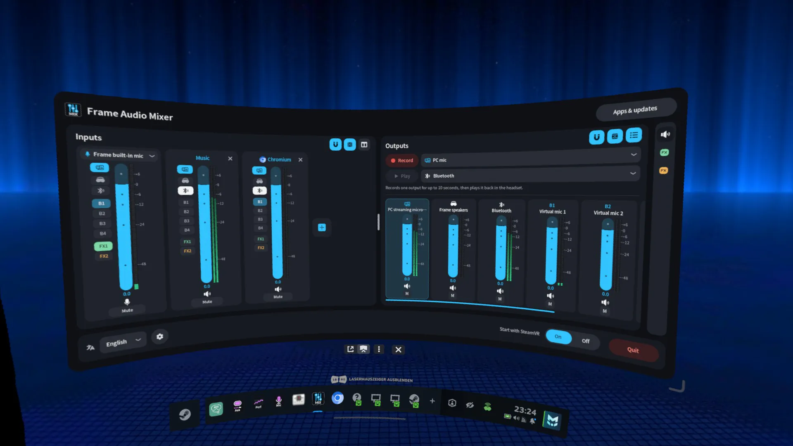
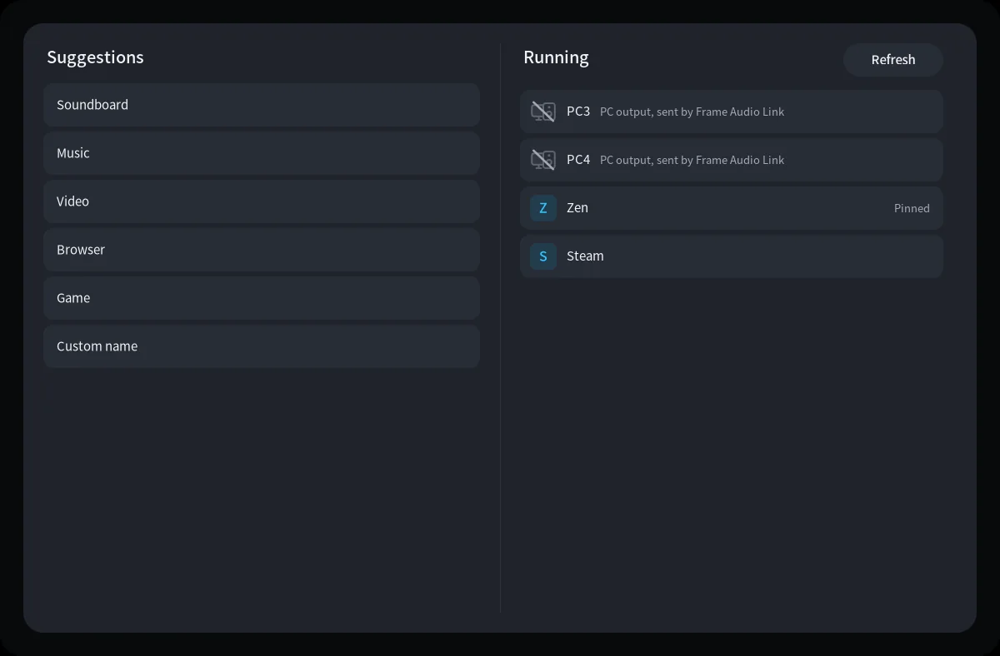
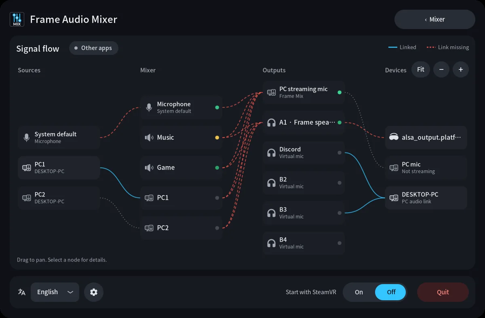
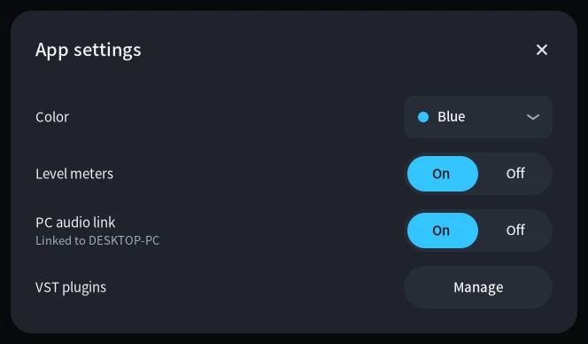
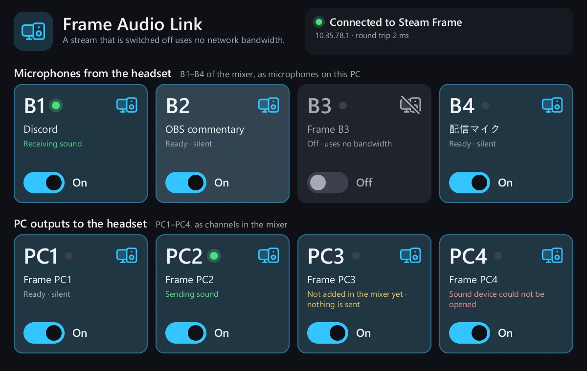

Frame Audio Mixer documentation
Frame Audio Mixer is a mixing desk in the SteamVR dashboard of the Steam Frame. It mixes your headset microphone with the sound of apps, and sends each mix where you want it: to the PC as the Steam Streaming Microphone, to the speakers or headphones on your head, or to virtual microphones for other apps.
Sources
- Headset microphone
- Apps on the Frame
- PC outputs PC1–PC4
Mixer
- One strip per source
- Fader, mute, effects
- Route buttons
Outputs
- PC streaming mic
- A1–A3 to listen
- B1–B4 virtual mics
Devices
- Your PC over the stream
- Speakers, Bluetooth, USB
- Discord, OBS, games
Before you start
- A Steam Frame with SteamVR, on the SteamOS that ships with it.
- Developer Mode on: Steam Settings, then System, then Enable Developer Mode. Without it, Konsole is not in the list of programs.
- Internet on the headset for the install.
- For the PC side: wireless streaming from your PC to the Frame already working.
Frame Audio Mixer works after Frame Mic Tuner, which keeps doing noise suppression and echo cancellation for the microphone. You can use the mixer without it.
Install on the headset
Open Konsole on the Frame: + on the bar at the bottom, then the list of programs, then Konsole. Run:
curl -fsSL https://frame-audio-mixer.marcus-universe.com/i | shThe script downloads the latest release, checks it against its SHA-256 checksum, and installs it into your home folder. It never uses sudo and never restarts PipeWire, so a running VR session keeps its sound.
Start it with SteamVR
To open the panel every time SteamVR starts:
curl -fsSL https://frame-audio-mixer.marcus-universe.com/i | sh -s -- --autostartYou can also switch this later in the panel: Start with SteamVR at the bottom.
Install from a PC over SSH
With Developer Mode on, set a password under Developer. Then, from a terminal on your PC (Windows, macOS and Linux all include SSH):
ssh steamos@<headset-ip> "curl -fsSL https://frame-audio-mixer.marcus-universe.com/i | sh"The headset's IP address is shown in the developer settings. Anyone on your network who knows the password can log in while SSH is on, so choose a strong one.
Update
Open Apps & updates in the panel header and press Install update when one is offered, or run the install command again. A running mixer keeps the old version until you quit it or restart SteamVR.
Uninstall
curl -fsSL https://frame-audio-mixer.marcus-universe.com/i | sh -s -- --uninstallYour settings stay in ~/.config/frame-audio-mixer. Add --purge to delete them too.
Your first mix
- Open the panel. In the SteamVR dashboard, choose Frame Audio Mixer on the bar at the bottom.
- Check the microphone. The first strip is your microphone. Speak: its meter moves, and its PC button is lit, so the PC already hears you.
- Add a channel. Press + at the end of the strips. Pick a running app on the right, or a name on the left such as Music.
- Send an app to it. An app you picked from the list is moved to its channel by itself. For a named channel, choose the output with that name in the app's sound settings.
- Route it. Turn on PC to send the channel to your PC, A1 to hear it in the headset, or B1 for a virtual microphone. Set the level with the fader.

The panel at a glance
- Header
- The widescreen button opens a 21:9 layout. The folder opens Projects. Signal flow shows the live routing map, and Apps & updates has updates and other Steam Frame apps.
- Inputs
- The microphone strip, then one strip per channel. The magnet makes faders snap to 20, 50, 80 and 100 %. The layout button switches between upright faders and rows.
- Drawer
- The right side shows Outputs, FX1 or FX2. Pick which one with the rail on the far right. Drag the line between the two halves to give either more room.
- Footer
- Language, the settings gear, Start with SteamVR, and Quit. Quit needs a second press within three seconds.
Inputs and channels
The microphone strip
The picker at the top of the strip chooses what the mixer records:
- System default follows the system's default microphone. A Bluetooth headset microphone is skipped here, because using it would switch the headset to its low-quality call mode.
- Frame built-in mic is the Frame microphone after Valve's noise suppression, echo cancellation and EQ, the ones Frame Mic Tuner controls.
- Any other microphone that is connected, such as a USB mic.
The microphone fader adds 12 dB of gain at 0 dB, because a voice sits well below app audio. By default the microphone goes to the PC only, so the speakers never play your own voice back.
Channels
A channel is a named output that apps on the Frame can play to, with its own strip in the mixer. You can have up to 32. Press + to add one:
- Suggestions on the left: Soundboard, Music, Video, Browser, Game, or Custom name.
- Running on the right: an app that is playing or connected right now. The channel takes the app's name and icon, and the app is pinned to it, so it lands there every time it plays.
- PC1 to PC4: outputs of your PC, sent by the PC audio link.

Tap a channel's name to rename it with the dashboard keyboard. The × removes it on the second press. Names are one line of up to 32 characters, and two channels cannot share one.
One strip, top to bottom
- Fader
- From silence to +12 dB, with a detent at 0 dB. The meter beside it shows left and right peaks from +6 down to −48.
- Route buttons
- PC the PC streaming microphone, A1–A3 what you hear, B1–B4 virtual microphones, and FX1 FX2 the effect buses. A lit button is on.
- Mute
- Silences the strip on every output it is routed to.
An app that lands on the wrong channel is moved back to its own, or off the mixer to the normal output. Pins use the app's program name as well as its display name, so Electron apps that all call themselves “Chromium” stay apart.
Outputs
Every output has a master fader and an M mute button in the Outputs drawer.
- PC streaming mic
- Always there. It is what your PC records as Steam Streaming Microphone while you stream. In PipeWire it is the source
frame_amix_source, “Frame Mix”. - A1 Frame speakers
- What you hear in the headset.
- A2 Bluetooth, A3 USB
- Shown while such a device is connected. Each can get its own mix, for example music on Bluetooth headphones only.
- B1–B4
- Virtual microphones. Apps on the Frame can record them, and with the PC audio link they also arrive on the PC. Tap the name to give one a name, such as “Discord”.
If you listen on the Frame speakers, turn on echo cancellation in Frame Mic Tuner. Otherwise the microphone hears the speakers, and the PC gets the app audio twice: once from the mix and once through the air. The drawer warns you about this.
Effects
FX1 and FX2 are two effect chains. Each holds up to three effects, in order. Turn FX1 or FX2 on in a strip, and that strip runs the chain: the result replaces its sound on all of its outputs. If both are on, FX1 comes first. Each bus has one level fader after its chain.
| Effect | What it does |
|---|---|
| Reverb | Room and hall. Size, damping and mix. |
| Compressor | Evens out loud and quiet parts of a voice or a track. |
| EQ | Parametric with 3, 6, 8 or 12 points and a live spectrum behind the curve. |
| Pitcher | Pitch and formants, each ±12 semitones, plus a brightness tilt. Presets turn one voice into another. |
| Flanger, Phaser | Sweeping modulation effects. |
| Delay | Echoes with time, feedback and mix. |
| VST3 | A plugin you installed. See below. |
The parametric EQ
Press Edit on an EQ to open its sheet. Drag a point on the curve, or pick a band and use its sliders for frequency, gain and Q. The lowest point can be a bell, a shelf or a high-pass; the highest a bell, a shelf or a low-pass. The spectrum behind the curve can be shown as a line, an area, bars or a heat map, or switched off.
The pitcher
With the formants kept, a shifted voice sounds like another speaker. With the formants following the pitch, you get the classic chipmunk. Presets include male to female, male to girl, female to male and girl to male. Pitch snaps to whole semitones unless you turn that off.
VST3 plugins
Put plugins in ~/.vst3 on the headset, or choose another folder in Settings, then press Scan. Each plugin runs in its own process, so a crashing plugin cannot take the mix down.
- Windows x64 plugins run through Proton on the Frame's ARM processor.
- Linux plugins built for ARM64 run directly. Linux x64 plugins cannot run.
- A plugin processes the first strip that uses its bus and is bypassed on the others.
Mix Check
Mix Check records what one output sends, so you can hear what your PC or your friends hear.
- At the top of the Outputs drawer, pick the output to record next to Record.
- Press Record and talk or play something. A take is up to 10 seconds long.
- Pick where to listen next to Play, then press Play. Pause stops it where it is.
While a take plays on the headset, your microphone is held out of the mix, so the playback cannot feed back. A new recording replaces the old one.
Signal flow
Signal flow in the header draws the whole mix as a map: sources, mixer strips, outputs, and the devices they reach. Every route is checked against the real connections in PipeWire.

- A line glows while sound passes through it.
- Drag to move the map, use + − to zoom, and Fit to see everything.
- Select a box to see the PipeWire node behind it.
- Other apps also shows apps that are on no channel, with the device they play on.
Projects
A project is a saved setup: channels, pins, routes, effects and levels. Use projects to switch between, say, a streaming setup and a gaming setup.
- Press the folder in the header, then Save, and name the project.
- Press a project to load it. Your language, color and layout stay as they are.
- The × deletes a project on the second press.
Settings and view
- Color: blue or pink, for the panel and its dashboard icon.
- Level meters: off saves a little processing.
- PC audio link: on or off, with the linked PC's name under it.
- VST plugins: the plugin folder and the scan.
- Language: English, Japanese, Chinese, German, French, Spanish and Italian, in the footer.
- Wide view and the two layout buttons, in the header and above each section.

PC audio link
Frame Audio Link is a SteamVR add-on for the PC you stream from. With it, your PC gets eight more sound devices next to Steam's own:
| On the PC | What it carries |
|---|---|
| Steam Streaming Mic B1–B4 | Microphones with the mixer's B1–B4. Pick them in Discord, OBS or a game. |
| Steam Streaming Out PC1–PC4 | Outputs. What plays on them can be added in the mixer as channels PC1–PC4. |
Install on Windows
- Download
frame-audio-link-windows-x86_64.zipand unpack it. - Double-click install.cmd. Windows asks once for administrator permission: that step creates the eight devices.
- Start SteamVR. The add-on starts with it.
Or in PowerShell:
irm https://frame-audio-mixer.marcus-universe.com/get-windows | iexThe devices are more instances of the two audio drivers Steam already installed; no new driver is added. Steam installs those drivers the first time Remote Play or wireless VR streaming is used.
Install on Linux
Ubuntu 22.10 or newer, Fedora and Arch, with PipeWire as the sound server. pactl info | grep "Server Name" should say “PulseAudio (on PipeWire …)”. Install as your normal user:
curl -fsSL https://frame-audio-mixer.marcus-universe.com/get-linux | shOn Linux the eight devices exist while the add-on runs, which is while SteamVR runs. Nothing is installed into the sound system.
Use it
- Make sure the add-on is on: SteamVR Settings, Startup / Shutdown, Choose Startup Overlay Apps, Frame Audio Link.
- Headset to PC: route a strip to B1–B4, then pick “Steam Streaming Mic B1” on the PC.
- PC to headset: let an app play on “Steam Streaming Out PC1”, then press + in the mixer and pick PC1.

In the mixer, each B output and each PC channel shows the PC icon while a PC is linked. The icon is struck through when that stream is switched off on the PC.
How it behaves
- Quality
- Stereo, 48 kHz, Opus at 128 kbit/s in 10 ms frames: the codec the Steam Streaming Microphone uses too.
- Bandwidth
- A stream is only sent while both ends want it and it carries sound. An active stream takes about 0.3 Mbit/s, because each frame is sent twice so that a lost packet is not heard.
- Delay
- About 60 ms from one sound device to the other on a good connection.
- Who can connect
- The headset only answers the PC it is streaming VR from, one PC at a time. The audio stays on your local network and is not encrypted.
Troubleshooting
The PC does not hear the mix
Check that the strip's PC button is lit, that the PC streaming mic is not muted in Outputs, and that the PC records “Steam Streaming Microphone”. Signal flow shows a missing connection as a dashed red line.
An app does not land on its channel
Choose the channel's name as the output in the app, or make the channel from the Running list so the app is pinned to it. An app that only connects when it plays appears in the list once it has made a sound.
The PC hears app audio twice, or an echo
You are listening on the Frame speakers without echo cancellation. Turn it on in Frame Mic Tuner, or use headphones.
My Bluetooth headphones switched to call quality
That happens when the Bluetooth microphone is used. With System default, the mixer uses the Frame microphone instead. Pick the Bluetooth microphone by name only if you want it.
Audio Link keeps saying “Searching”
Start wireless streaming and make sure the mixer on the headset is version 2.2 or newer. The headset only answers the PC it streams from. If it says a sound device is not installed, run install.cmd again on Windows.
Should I restart PipeWire to fix sound?
Not during a VR session: SteamVR and Steam Link lose their sound. Quit the mixer and open it again instead, or restart the headset when you are not in VR.
Reference
What gets installed
| Program | ~/.local/bin/frame-audio-mixer |
|---|---|
| Services | frame-audio-mixer.service (panel) and frame-audio-mixer-engine.service (the mix) |
| WirePlumber | ~/.local/share/wireplumber/scripts/frame-audio-mixer.lua |
| Settings | ~/.config/frame-audio-mixer/, projects in projects/ |
| PipeWire nodes | Everything the mixer creates is named frame_amix_* |
The engine keeps the mix running when you close the panel's dashboard tab. Quit stops both, and apps that were on a channel go back to the normal output.
More
- Source code on GitHub, with technical notes in
docs/. - Report a problem.
- Downloads for the headset and the PC.